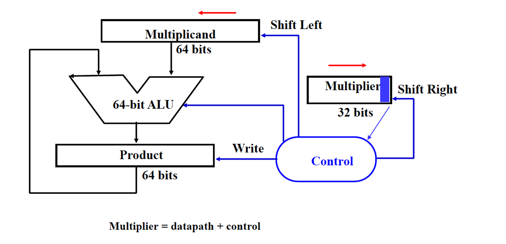
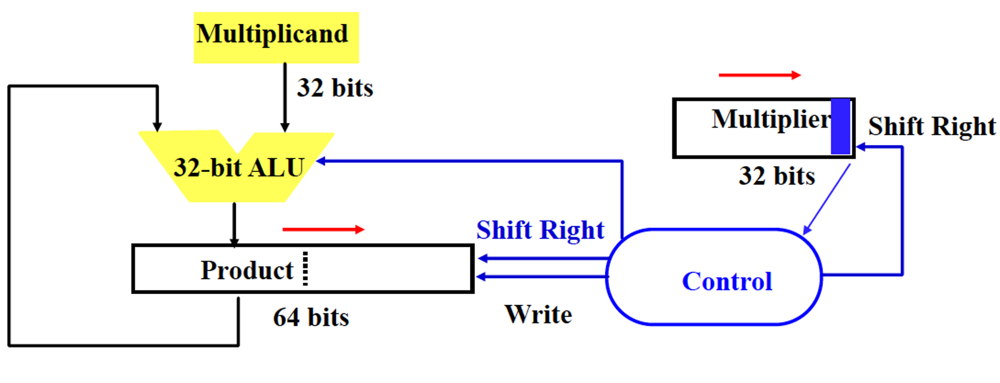
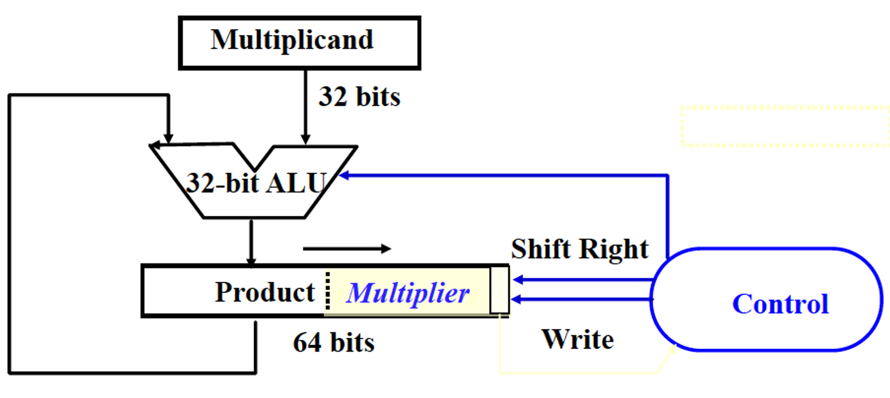
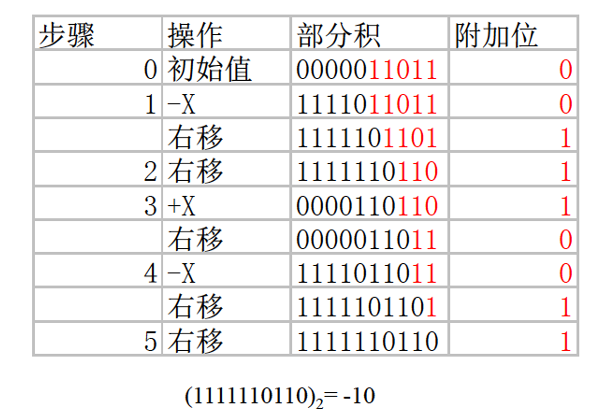
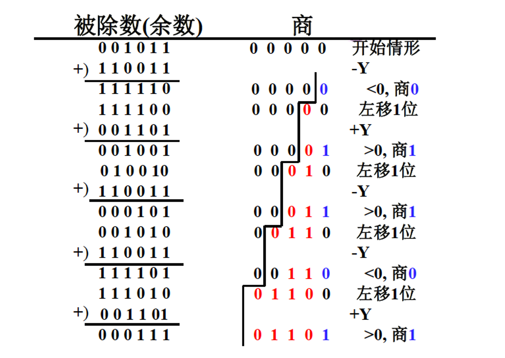
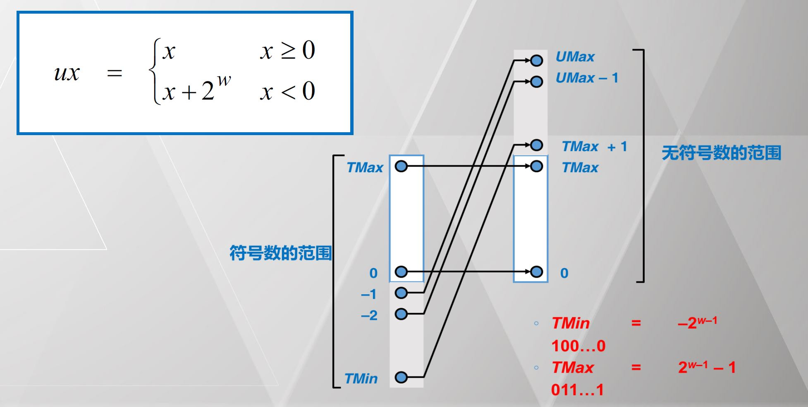
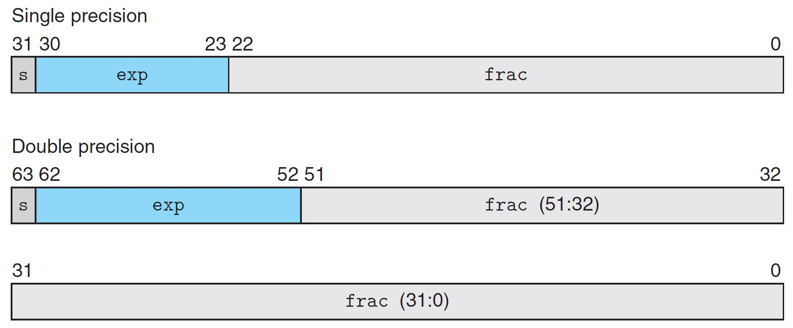
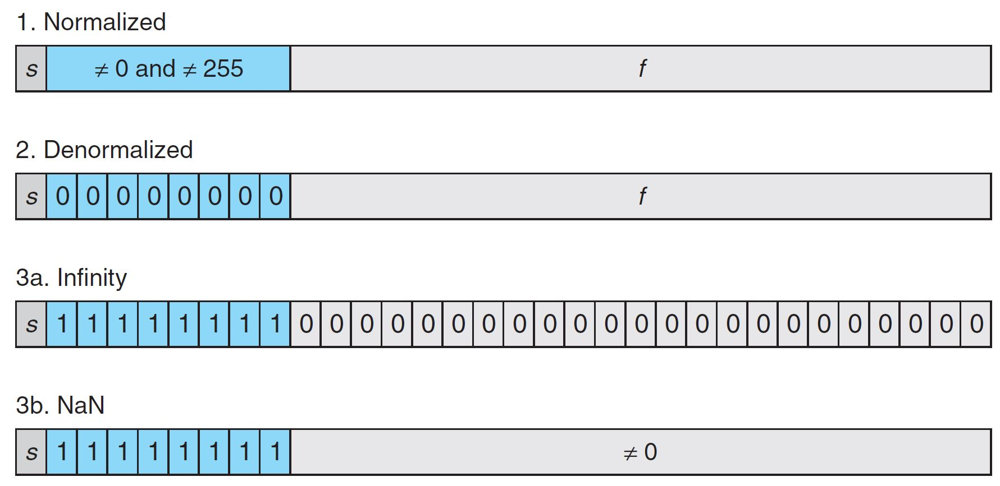
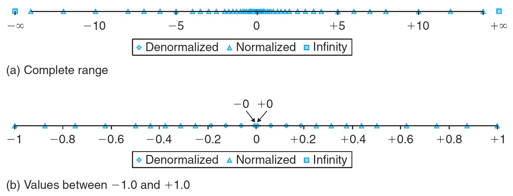

数据表示、数据运算和运算器设计¶
计算机系统概述¶
通用计算机（Universal Machine）：使用图灵机来模拟图灵机的执行，可以不局限于执行的具体指令。
Von Neumann 架构：存储程序（内存是指令和数据统一的存储），顺序指令处理。
计算机运行机制：

计算机性能¶
吞吐率：单位时间内完成的任务数量。
响应时间：完成单个任务的时间。
辨析：吞吐率与响应时间
尽管二者都可用来衡量性能，但两者并不完全等价，例如，考虑以下两种提升性能的方法：
- 将计算机中的处理器更换为更高速的型号。
- 为系统增加额外的处理器，使用多处理器来分别处理独立的任务。
一般来说，降低响应时间几乎总是可以提高吞吐率，因此 1 同时改进了两者。
而对于 2 来说，增加处理器个数并不会使得单个任务完成更快，只会提高吞吐率。
CPU 时间 = CPU 时钟周期数 * 时钟周期长度
CPU 时钟周期数 = 程序指令数 * 指令平均时钟周期数（CPI）
CPU 时间 = 指令数 * CPI / 时钟频率
算术运算及电路实现¶
加减法¶
溢出检测：检测符号位。
| 操作 | 操作数 A | 操作数 B | 溢出条件 |
|---|---|---|---|
| A + B | \ge 0 | \ge 0 | < 0 |
| A + B | < 0 | < 0 | \ge 0 |
| A - B | \ge 0 | < 0 | < 0 |
| A - B | < 0 | \ge 0 | \ge 0 |
乘法¶
原码乘法¶
乘法实现1¶
- 若乘数的当前位为 1，将被乘数和部分积求和。
- 若乘数的当前位为 0，跳过。
- 将部分积移位。
- 所有位都乘完后，部分积即为最终结果。
需要 64 位被乘数寄存器，64 位ALU，64 位部分积寄存器，32 位乘数寄存器。

缺陷：
- 被乘数的一半存储的只是 0，浪费存储空间。
- 每次加法实际上只有一半的位有效，浪费计算能力。
乘法实现2¶
需要 32 位被乘数寄存器，32 位ALU，64 位部分积寄存器，32 位乘数寄存器。

乘法实现3¶
需要 32 位被乘数寄存器，32 位ALU，64 位部分积寄存器。

补码乘法¶
方案一：补码转化为原码绝对值，算完后再根据符号转换回补码表示。
方案二：布斯乘法直接乘。
布斯乘法¶
乘法可以拆解为加法和减法的组合。
考虑一个补码 x = x_{n-1}x_{n-2} \dots x_1 x_0：
则容易有：
其中 y_{-1} = 0。
因此，可直接用补码进行乘法运算，根据乘法相邻两位的不同组合确定是 \pm x。
例：计算 2 \times (-5)。

易错点：
- 部分积部分使用乘法实现 3，红色部分为乘数 -5，黑色部分为部分积。
- 黑色部分部分积右移为 逻辑右移，需要在最高位补符号。
- 加减乘数的时候需要 左对齐。
除法¶
加减交替除法¶
若上次减运算结果为负，可直接左移，本次用 +Y 即可，如果减运算结果为正，用 -Y 求余。
例：

数据表示及检错纠错¶
数据编码¶
字符型数据¶
- ASCII：7 位二进制编码，占用一个字节表示 128 个西文字符。
- UNICODE：16 位表示 65536 个字符。
- UTF-8：变长，除首字节均以 10 开始，可自同步，可扩展性强。
点阵字体¶
本质是单色位图。
矢量字体¶
一个字可以用多条曲线表示，每条曲线保存关键点，显示时取出关键点用平滑曲线连接并填充闭合空间，可等比例缩放。
数值型数据¶
原码反码与补码¶
无符号数（原码表示）：B2U(X) = \sum \limits_{i = 1}^{w - 1} x_i \cdot 2^i
带符号数（补码表示）：B2T(X) = -x_{w - 1} \cdot 2^{w - 1} + \sum \limits_{i = 0}^{w - 2} x_i \cdot 2^i
-
非负数：补码 = 原码；
-
负数：补码 = 反码 + 1 = 2^w + 该负数（补码表示相反数按位取反再加一）。
取值范围：
-
无符号数：[0, 2^w - 1]；
-
带符号数：[-2^{w - 1}, 2^{w - 1} - 1]（0的归属不对称）。
无符号数与带符号数之间的转换：二进制串的表示是不变的，变化的是解释。

负数的原码、反码、补码表示均不同。
浮点数¶
(-1)^s M 2^E
- 符号（sign）：s。
- 尾数（significand，
frac域）：M，是一个位于区间 [1.0, 2.0) 的小数。 - 阶码（exponent，
exp域）：E。
单精度浮点数：exp 域8 bits，frac 域 23 bits。
双精度浮点数：exp 域11 bits，frac 域 52 bits。

规格化浮点数（Normalized）¶
- 满足条件：\text{exp} \neq 00\dots0 且 \text{exp} \neq 11\dots1
- 真实的阶码值需要减去偏置量
bias（保证为正） - E = \text{exp} - \text{bias}
- \text{bias} = 2^{e - 1} - 1，e 为
exp域的位数（float: 127, double: 1023） frac域的第一位隐含1，因此第一位的1可以省去- 00\dots0(M = 1.0) - 11\dots1(M = 2.0 - \varepsilon)
非规格化浮点数（Denormalized）¶
满足条件：\text{exp} = 00\dots0
E = 1 - \text{Bias}（而非用 0 减）
M = 0.xxx\dots x_2
- 提供了0的表示方法
不同的符号位会出现 +0.0 与 -0.0。
- 提供了极小数值的表示法
Gradual underflow，逐步丧失精度，在0附近均匀分布。
除了规约浮点数，IEEE754-1985标准采用非规约浮点数，用来解决填补绝对值意义下最小规格数与零的距离。（举例说，正数下，最大的非规格数等于最小的规格数。而一个浮点数编码中，如果exponent=0，且尾数部分不为零，那么就按照非规约浮点数来解析）非规约浮点数源于70年代末IEEE浮点数标准化专业技术委员会酝酿浮点数二进制标准时，Intel公司对**渐进式下溢出**（gradual underflow）的力荐。当时十分流行的DEC VAX机的浮点数表示采用了**突然式下溢出**（abrupt underflow）。如果没有渐进式下溢出，那么0与绝对值最小的浮点数之间的距离（gap）将大于相邻的小浮点数之间的距离。例如单精度浮点数的绝对值最小的规约浮点数是 {\displaystyle 1.0\times 2^{-126}}，它与绝对值次小的规约浮点数之间的距离为 {\displaystyle 2^{-126}\times 2^{-23}=2^{-149}}。如果不采用渐进式下溢出，那么绝对值最小的规约浮点数与0的距离是相邻的小浮点数之间距离的 {\displaystyle 2^{23}} 倍，可以说是非常突然的下溢出到 0。**这种情况的一种糟糕后果是：两个不等的小浮点数 X 与 Y 相减，结果将是 0。**训练有素的数值分析人员可能会适应这种限制情况，但对于普通的程序员就很容易陷入错误了。采用了渐进式下溢出后将不会出现这种情况。例如对于单精度浮点数，指数部分实际最小值是（-126），对应的尾数部分从{\displaystyle 1.1111\ldots 11}， {\displaystyle 1.1111\ldots 10} 一直到 {\displaystyle 0.0000\ldots 10}，{\displaystyle 0.0000\ldots 01}，{\displaystyle 0.0000\ldots 00} 相邻两小浮点数之间的距离（gap）都是 {\displaystyle 2^{-126}\times 2^{-23}=2^{-149}}；而与0最近的浮点数（即最小的非规约数）也是 {\displaystyle 2^{-126}\times 2^{-23}=2^{-149}}。
一些特殊值¶
- s = 0, \text{exp} = 11 \dots 1, \text{frac} = 0：+\infty
- s = 1, \text{exp} = 11 \dots 1, \text{frac} = 0：-\infty
- \text{exp} = 11 \dots 1, \text{frac} \neq 0：\text{NaN}
总结¶

例：6 bit浮点数。

浮点数加减法¶
- 对阶操作，求阶差 \Delta E = E_x - E_y，使阶码小的数的维数右移 |\Delta E| 位，去阶码较大的阶码值。
- 尾数加减。
- 规格化处理。
- 舍入操作，可能带来有一次规格化。
- 判断结果的正确性，即检查阶码上下溢出。
检错纠错码¶
码距：任意两个合法码之间至少有几个二进制位不相同。
仅有一位不同的编码是无纠错能力的。合理增大码距，能提高发现错误的能力，但会为传输和数据存储带来复杂度。
常用的检错纠错码：
- 奇偶校验码：并行传输数据。
- 海明校验码：并行传输数据。
- 循环冗余校验码：串行传输数据。
奇偶校验码¶
用于并行码 检错。
实现：在 k 位数据码之外增加 1 位校验位，使 k +1 位码字中取值为 1 的位数总保持偶数（偶校验）或奇数（奇校验）。
码距为 2。
海明校验码¶
用于多位并行数据 检错纠错。
实现：为 k 位数据码设立 r 个校验位，使 k + r 位的码字同时具有以下两个特性：
- 能发现并改正 k + r 位中任何一位出错。
- 能发现 k + r 位中任何两位同时出错，但已无法改正。
编码方法：
- 2^r \ge k + r + 1：用 2^r 个编码分别表示 k 个数据位，r 个校验位哪一位出错（发现并改成一位错），码距为 3。
- 2^{r - 1} \ge k + r：用 r - 1 位校验码为出错位编码，再单独设一位区分 1 位还是 2 位出错（发现并改正一位错，发现两位错），码距为 4。
校验位在 2 的幂次方位（index 从 1 开始），数据位编号可拆分为校验位编号的组合。
最后一位为总校验位，为所有位的异或。